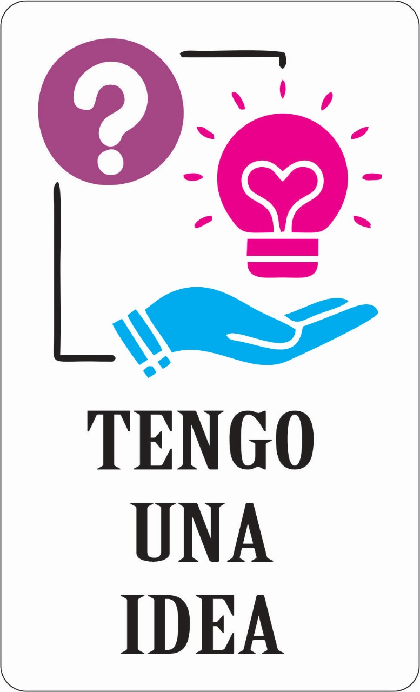

Bienvenido a la tienda oficial de Tengo Una Idea!
Aca vas a poder encontrar todos los productos que comercializo, mi historia, mi contacto y una pequeña guia de como usar mis productos!

Que es un chocotransfer?
El chocotransfer es una lámina comestible diseñada especialmente para transferir patrones o imágenes decorativas a superficies de chocolate.
Está hecha de una mezcla de manteca de cacao y colorantes alimentarios.
El proceso de uso de un chocotransfer es relativamente sencillo y se utiliza para embellecer chocolates de una manera rápida y profesional, comúnmente en repostería y chocolatería.
Como funciona el chocotransfer?
Diseño del chocotransfer:
La lámina de chocotransfer tiene impresos patrones o diseños de colores en una capa fina, que generalmente se hace con manteca de cacao coloreada.
Esto puede incluir diseños como flores, texturas, o incluso imágenes complejas.
Aplicacion sobre chocolate:
Para utilizarlo, se coloca la lámina de chocotransfer sobre una capa de chocolate aún caliente (derretido), generalmente sobre moldes de chocolate o chocolate temperado.
Secado y transferencia:
Una vez que el chocolate se endurece, el patrón o diseño impreso en el chocotransfer se transfiere al chocolate, creando una decoración visualmente atractiva.
Este proceso es similar al de la impresión de transferencias, pero utilizando la manteca de cacao como medio de colorante comestible.
Retiro de la lámina:
Tras el enfriamiento del chocolate, la lámina se retira cuidadosamente, dejando el patrón impreso en la superficie del chocolate.
Personalización
Se puede utilizar para crear decoraciones personalizadas, como logotipos o mensajes, lo que lo hace perfecto para eventos, marcas o celebraciones.
Consideraciones
Temperatura del chocolate:
Es importante que el chocolate esté a la temperatura adecuada para que la transferencia funcione correctamente.
Si está demasiado caliente o demasiado frío, el patrón podría no transferirse bien.
Calidad de la lámina:
La calidad de la lámina de chocotransfer es clave para lograr una transferencia perfecta.
Las láminas de baja calidad pueden no transferir los colores o patrones correctamente.
Que es una lamina comestible?
Una lámina comestible es una capa delgada, flexible y comestible que se utiliza principalmente en la cocina para cubrir, envolver o decorar alimentos.
Estas láminas pueden estar hechas de diversos ingredientes naturales o sintéticos, dependiendo de su función y el tipo de comida para la que estén diseñadas.
Algunos ejemplos comunes de láminas comestibles incluyen:
Láminas de arroz: Usadas en la cocina asiática, especialmente en la preparación de rollos de primavera o sushi. Están hechas a base de arroz y agua, y son suaves, traslúcidas y fáciles de manejar.
Láminas de gelatina o agar-agar: Son utilizadas en postres y gelatinas. Están hechas de sustancias derivadas de algas o colágeno animal, y se disuelven en líquidos calientes para formar gelatinas.
Láminas de azúcar: Utilizadas en repostería y decoración de pasteles. Se elaboran con azúcar y almidón, y se pueden imprimir con imágenes comestibles para dar un toque decorativo a los postres.
Láminas de chocolate: Finas capas de chocolate que se usan en la decoración de postres o para crear estructuras comestibles más elaboradas.
Láminas de alga nori: Se utilizan en la preparación de sushi. Son algas secas y comestibles que se cortan en láminas y se usan para envolver arroz y otros ingredientes.

Diseño del chocotransfer:
La lámina de chocotransfer tiene impresos patrones o diseños de colores en una capa fina, que generalmente se hace con manteca de cacao coloreada.
Esto puede incluir diseños como flores, texturas, o incluso imágenes complejas.
Aplicacion sobre chocolate:
Para utilizarlo, se coloca la lámina de chocotransfer sobre una capa de chocolate aún caliente (derretido), generalmente sobre moldes de chocolate o chocolate temperado.
Secado y transferencia:
Una vez que el chocolate se endurece, el patrón o diseño impreso en el chocotransfer se transfiere al chocolate, creando una decoración visualmente atractiva.
Este proceso es similar al de la impresión de transferencias, pero utilizando la manteca de cacao como medio de colorante comestible.
Retiro de la lámina:
Tras el enfriamiento del chocolate, la lámina se retira cuidadosamente, dejando el patrón impreso en la superficie del chocolate.
Personalización
Se puede utilizar para crear decoraciones personalizadas, como logotipos o mensajes, lo que lo hace perfecto para eventos, marcas o celebraciones.
Consideraciones
Temperatura del chocolate:
Es importante que el chocolate esté a la temperatura adecuada para que la transferencia funcione correctamente.
Si está demasiado caliente o demasiado frío, el patrón podría no transferirse bien.
Calidad de la lámina:
La calidad de la lámina de chocotransfer es clave para lograr una transferencia perfecta.
Las láminas de baja calidad pueden no transferir los colores o patrones correctamente.